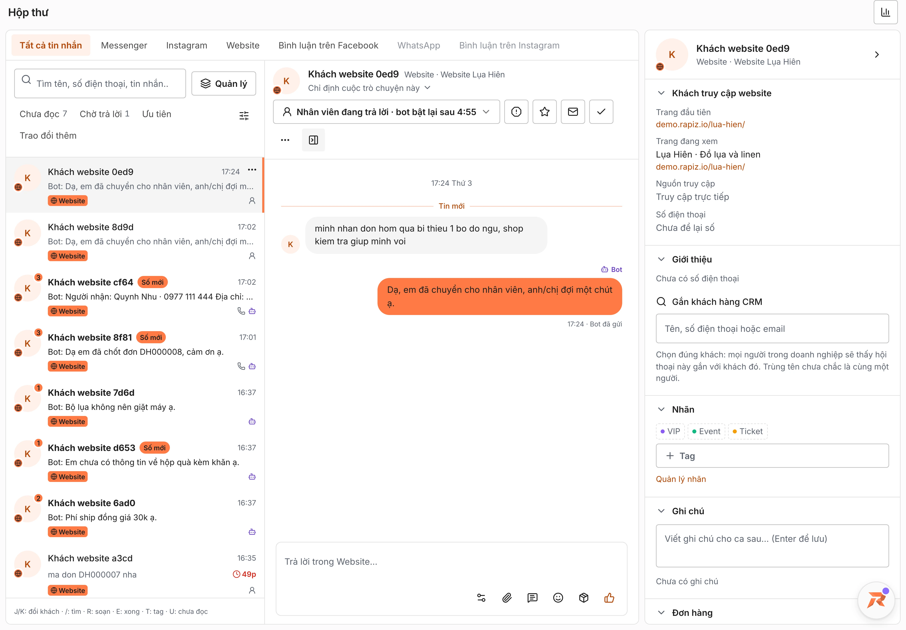

ĐĐức Anh
“Shop dời giúp mình căn A17 sang tối 21/11 nhé.”

Lý do bàn giaoCần kiểm tra lịch trống và chính sách cọc.
Rapiz Tin nhắn đa kênh
Tin từ nhiều kênh về cùng một hộp thư. Khi khách cần người hỗ trợ, Rapiz gửi kèm lý do để bạn tiếp lời.
“Shop dời giúp mình căn A17 sang tối 21/11 nhé.”
Đức Anh muốn đổi ngày nhận phòng. Bạn có thể nhận hội thoại và thử nhắn lại cho anh.
GIAO DIỆN HỘP THƯ

CÒN TRONG TÍNH NĂNG NÀY
Một chạm để xem hội thoại Chưa đọc, Chờ trả lời hoặc Ưu tiên, trên mọi kênh.
Tin nhắn đa kênh › bộ lọcXem bài gốc rồi trả lời công khai, nhắn riêng hoặc ẩn bình luận ngay trong hộp thư.
Tin nhắn đa kênh › Bình luận trên FacebookXem nguồn khách, số điện thoại, trạng thái và nhãn, mở hồ sơ đầy đủ khi cần.
Tin nhắn đa kênh › cột phảiJ và K đổi khách, R soạn tin, E đánh dấu xong, U đánh dấu chưa đọc.
Tin nhắn đa kênhCÂU HỎI THƯỜNG GẶP
Có. Bot dừng trong cuộc trò chuyện đó. Bạn có thể bật lại bằng tay hoặc đặt thời gian tự bật lại.
Khách mới được chia theo quy tắc bạn đặt. Bạn cũng có thể giao một hội thoại cho một nhân viên cụ thể.
Có. Bạn có thể cài Rapiz như một ứng dụng và bật thông báo khi bot cần người tiếp quản.